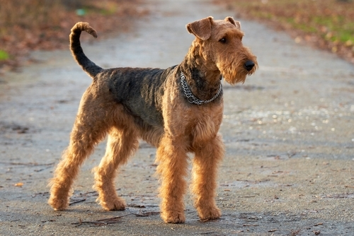
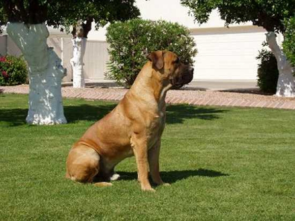
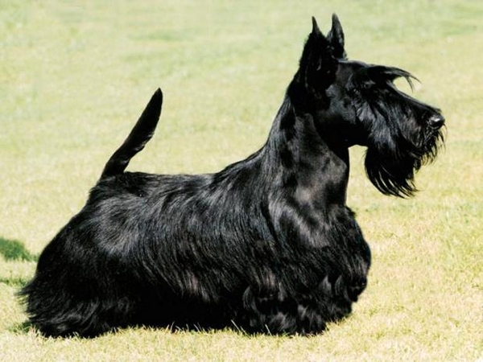
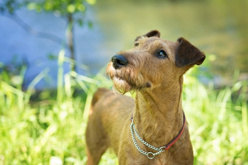

ერდელის სხვაგვარად "ტერიერების მეფესაც" უწოდებენ. ის მრავალმხრივი ნიჭითაა დაჯილდოებული. იგი კარგი მონადირე და დარაჯია. ერდელტერიერი წარმატებით მსახურობს პოლიციისა და სამხედრო რიგებში. იგი სხვა ძაღლების მიმართ აგრესიით გამოირჩევა, თუმცა, ერთგულია პატრონების მიმართ.

ერდელტერიერი
აკიტა ინუ
აკიტა ინუ ერთ-ერთია იმ ძაღლების ჯიშებისა, რომელთა მხოლოდ დანახვით შეგიყვარდებათ. მას აქვს ძალიან ტკბილი გამომეტყველება და ქურთუკი ისეთი მკვრივია, რომ გსურს მის განმეორებით განმეორება. ამასთან, ეს არის ძალიან განსაკუთრებული ცხოველი, რომელსაც შეუძლია ბედნიერი იყოს მხოლოდ იმ შემთხვევაში, თუ ოჯახი მზად იქნება დაუთმოს საჭირო დრო.

ბურბული
ეს ჯიში ცნობილია ასევე, როგორც სამხრეთ აფრიკული მასტიფი. ბურბული გამოიყვანეს სამხრეთ აფრიკაში ძირითადად სახლისა და ფერმის დასაცავად. ის ძალიან ძლიერი ძაღლია და კარგი მოდარაჯეა. ძალიან ერთგულები არიან მეპატრონის მიმართ. ამ ჯიშის ძაღლები საკმაოდ აქტიურები არიან და ხშირი ვარჯიში სჭირდებათ. ლეკვობის ასაკიდან უნდა გაიწვრთნას სწორად, წინააღმდეგ შემთხვევაში საკმაოდ აგრესიულები არიან სხვა ცხოველებისა და უცნობების მიმართ. მის ყოლაზე აკრძალვები მოქმედებს: რუმინეთში, ბერმუდის კუნძულებზე, სინგაპურში, შვეიცარიაში, რუსეთსა და უკრაინაში.

შოტლანდიური ტერიერი
ჩასკვნილი, აქტიური, პატარა შოტლანდიური ტერიერი იმდენად განსაკუთრებული ჯიშია, რომ თავისი მშობლიური შოტლანდიის არაოფიციალურ სიმბოლოდაც კი იქცა . სიჯიუტის გამო მისგან თვინიერი ოჯახის ძაღლი არ დგება. მთის ტერიერებს შორის ყველაზე ცნობილი და ერთ-ერთი ძველი ჯიში შოტლანდიური ტერიერი დაახლოებით 150 წლის წინ გამოიყვანეს აბერდინში. ჯიშის სტანდარტი საბოლოოდ ჩამოყალიბდა 1880 წელს, ცხარე კამათის შემდეგ. თავნება ხასიათის მიუხედავად, მისგან შესანიშნავი მოდარაჯე ძაღლი დგება.

ამერიკული ბულდოგი
ამერიკული ბულდოგი ძლიერი ძაღლია, ის, რაც შიშველი თვალით ჩანს. ეს მშვენიერი სამუშაო ძაღლია, მაგრამ მან ერთგულებისა და კარგი იუმორის წყალობითაც მოახერხა ადგილის დამსახურება ბევრ სახლში. თუ ამ ჯიშის ძაღლის ძებნას ფიქრობთ, მისი ყველა დეტალი უნდა იცოდეთ.

ირლანდიური ტერიერი
ირლანდიური ტერიერი ერთ-ერთი უძველესი ჯიშია ტერიერებს შორის. ის ძალიან აქტიური და პატრონების მიმართ მოსიყვარულეა. ირლანდიური ტერიერი კარგად ითვისებს სხვადასხვა ბრძანებებს და საუკეთესო კომპანიონია ოჯახისთვის. მისი აყვანის შემთხვევაში, აუცილებელია იცოდეთ, რომ ის რთულად ეგუება სხვა შინაურ ბინადრებს. ასევე, შესაძლოა, აგრესია გამოხატოს სხვა ძაღლების მიმართ პარკში სეირნობის დროს.